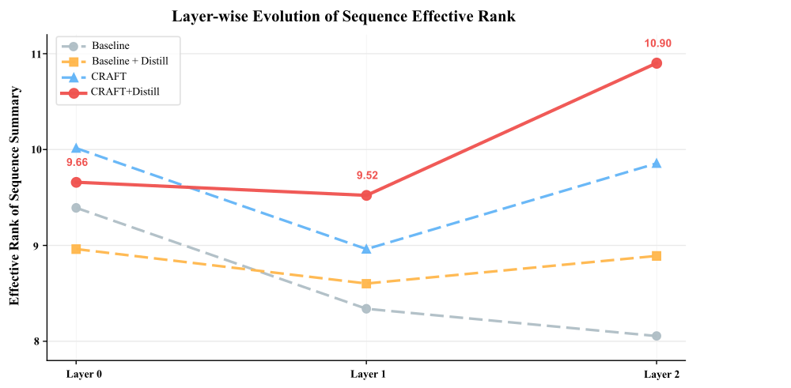
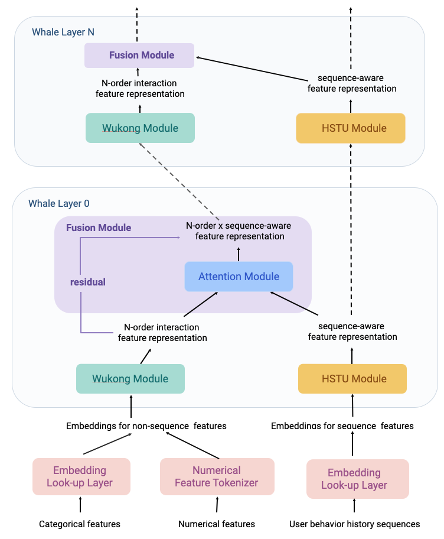

Contents · 8 sections
1What problem is it actually solving?2The big picture3Taking it apart: the context vector and residual transport4Does it actually work better?5What is more worth taking from the appendix6Limitations as I see them7How a recommendation/search team could try it8One-sentence conclusionSHARE
It is worth twenty minutes for anyone building ranking models, but not for the architecture gain. Read it for its explanation of why stacking a unified model deeper does not reliably help, and for the very practical feature-engineering notes in the appendix. It is a KDD Cup 2026 entry for Tencent's UniRec track (TAAC2026, ad conversion prediction) from Tianjin University. The core idea in one sentence: pool the user, item and context features into one reliability-weighted context vector, and let it steer how intent and sequence tokens change at every layer. Concretely, that vector generates a scale, a bias and a "return to the starting state" gate for those tokens, so non-sequential features become controllers rather than things that get mixed. Keep the numbers apart: CRAFT (the authors' block, Contextual Residual Adaptive Feature Transport) lifts a strong baseline's test AUC from 0.837165 to 0.837231, only +0.000066; distillation lifts the same baseline to 0.837983, more than 12 times as much; combined, they reach 0.838090, above the previous leaderboard best of 0.83798.
What problem is it actually solving?
Start with an illustrative scenario. A TAAC2026 sample carries user-side and item-side sparse ID fields and dense vector fields, a request timestamp, and behavior sequences from several business domains. Popular unified models (OneTrans, HyFormer and the like) turn all of this into tokens and mix them at each layer with attention or MLPs. HyFormer generates a few global query tokens from the non-sequential features, lets the queries read the long sequences, then mixes the queries together with the non-sequential tokens.
The trouble is the "mix together" part. Suppose a dense field is all-zero padding on 90% of samples (illustrative). It takes part in every layer's mixing like any other token:
| Illustrative sample | Field A (reliable) | Field B (mostly missing) | Main direction the query moves after mixing |
|---|---|---|---|
| User 1 | buys running shoes | all zeros | pulled the same way by B |
| User 2 | buys baby products | all zeros | same |
| User 3 | buys electronics | all zeros | same |
Three users with completely different interests have their queries pushed toward the same place by the same "missing" signal. More layers push further, query diversity drops, and sequence evidence is diluted. The authors cite TokenFormer's observation that collapsed non-sequential fields degrade sequence representations. Their argument is that the bottleneck of unified models is not whether features can interact, but whether information gets overwritten, compressed or biased as it travels up the layers. They call this feature transport.
The framing borrows an intuition from flow models: treat each layer as one "displacement" step of the representation, so the model learns which way and how far to move at each step while not forgetting where it started. It only borrows the intuition, though. There is no solver or special training objective from generative modeling; training uses ordinary binary cross-entropy.
The big picture
![CRAFT architecture. Bottom left is heterogeneous tokenization: raw non-sequential features go through the NS-Encoder to become N⁰, each sequence group is summarized (triangles), and together with N⁰ they feed the Intent Generator, which produces intent tokens I⁰. Top left zooms into the CRFT module: reliability-weighted pooling over N gives c, and a parameter generator turns c into γ, β, η that act on intents and sequences. On the right is the order inside one CRAFT block: CRFT module → sequence encoders → cross-attention from intents to sequences → RankMixer mixing. L blocks are stacked in the middle.](../../../figs/2026-09-04/personalization/2609.01655/fig2_arch.png)
Inside one CRAFT block, these steps happen in order:
| Step | Input | What it does | Output |
|---|---|---|---|
| 0. Tokenization (once) | raw features | sparse ID fields look up embeddings, then a RankMixer-style tokenizer compresses them into a fixed number of tokens (RankMixer concatenates field embeddings, cuts the result into a fixed number of segments and projects each into a token; the paper reuses this and does not give the grouping); dense vectors are handled by structure; each sequence group is pooled into a summary, which is concatenated with the non-sequential tokens and passed through an MLP to generate that group's intent tokens | N⁰, S⁰, I⁰ |
| 1. Context pooling | non-sequential tokens N | score each for reliability, softmax, weighted sum | context vector c |
| 2. Contextual residual transport | c, intents I, sequences S | generate γ, β, η from c and update I and S with the formula below | modulated Ĩ, S̃ |
| 3. Bridge exchange | Ĩ, N, S̃ | sequence encoders refine sequences; intents cross-attend to sequences; intents and non-sequential tokens go through a RankMixer mixing layer (each of T tokens is cut into T segments, the h-th new token is the concatenation of every token's h-th segment, then each passes through its own FFN) | next layer's I, N, S |
| Prediction | all last-layer intent tokens | concatenate, project, MLP | conversion probability |
"Intent token" is the paper's term: 2 small per-sample vectors per behavior group that carry information back and forth between the non-sequential context and the behavior evidence; only they reach the prediction head. Compared with the HyFormer-style baseline, step 3 is essentially unchanged and non-sequential tokens are still mixed with intent tokens in RankMixer. What is new is steps 1 and 2: before the mixing, the non-sequential features act as controllers that decide how the intent and sequence representations change at this layer. The next section takes these two steps apart.
Taking it apart: the context vector and residual transport
Why weight by reliability instead of averaging? Mean pooling gives the mostly-missing field B the same say as the reliable field A. CRAFT gives each non-sequential token a small scoring network r and uses a softmax over the scores as weights:
A hand-computed illustrative example: three fields score 2, 1 and −1. e² ≈ 7.39, e¹ ≈ 2.72, e⁻¹ ≈ 0.37, which normalize to weights of about 0.71, 0.26 and 0.04. So the lowest-scoring field contributes about 4%; even if it is a pile of padding zeros, it can hardly bias c anymore. The scorer has no extra supervision; its weights are learned entirely from the conversion-label gradient.
How exactly does residual transport change the representation? For intent tokens or sequence tokens Z (each with its own parameters), CRAFT updates:
γ, β and η are all generated from the context vector c by a small network, differently per layer and per sample. The first two terms are familiar FiLM-style modulation: γ scales the current representation according to context and β shifts it. The third term is the paper's distinctive piece: η is a gate that controls how far the representation is pulled back toward its layer-0 initial state.
A one-dimensional illustrative example: current value Z=2, initial value Z⁰=1, RMSNorm(Z)=1 after normalization; the context yields γ=0.1, β=0.05, η=0.2. Plugging in gives 2 + 0.1 + 0.05 + 0.2×(1−2) = 1.95. The first two terms push it out by 0.15, and the memory gate pulls it back toward the initial value by 0.2. Why is this term needed? With many layers, early intent information is easily washed out by repeated mixing; η gives the model a path to recover the starting point on demand, and how much it recovers depends on the current sample's context.
Why do the bridge exchange at every layer? The traditional approach computes the sequence module and the feature-interaction module separately and concatenates at the end (late fusion). CRAFT has the intents read the sequences and then mix with non-sequential tokens at every layer, so sequence evidence, intents and context are re-aligned each layer. This part follows HyFormer-style practice and is not new.
Does it actually work better?
All experiments are on TAAC2026, with the official test-set AUC. There are three comparison points: the organizers' original baseline; the authors' tuned "optimized baseline", a HyFormer-style unified model with structure-aware tokenization, stable optimizer settings and EMA (exponential moving average of parameters); and that optimized baseline with two generations of distillation. Distillation has three stages: first train a supervised model without distillation as an anchor; the first-generation student starts from random initialization with the anchor as teacher and a soft-label weight of 0.5; the second-generation student is also trained from scratch, with the first-generation student as teacher and weight 0.65. The "distill" results in the table use the 0.65 setting, i.e. the second generation. CRAFT uses hidden size 420, embedding size 64, 4 attention heads, distillation temperature 1.0 and weight 0.65.
| Model | Test AUC | Gain over original baseline (AUC diff ×1000) | Inference params | GFLOPs per sample |
|---|---|---|---|---|
| Original baseline | 0.832688 | – | 182.21M | – |
| Optimized baseline | 0.837165 | +4.48 | 307.27M | 6.955 |
| Optimized baseline + distill | 0.837983 | +5.30 | 334.87M | 9.889 |
| CRAFT | 0.837231 | +4.54 | 308.69M | 6.970 |
| CRAFT + distill | 0.838090 | +5.40 | 308.69M | 6.970 |
Split the numbers into three increments and the picture is clear. Going from the original to the optimized baseline, tokenization and training tuning add about 0.0045 AUC, the bulk of it. Switching the optimized baseline to CRAFT adds only 0.00007. Distillation alone adds about 0.0008, an order of magnitude more than the CRAFT architecture itself. Combined, CRAFT + distill beats optimized baseline + distill by about 0.0001, with 26M fewer parameters. This shows the CRAFT and distillation gains do not cancel out, but what really creates the gap in this paper is feature handling and training method; the architecture is only the last small step.
The authors also give representation diagnostics based on effective rank: take a batch of representations, do an SVD, and see across how many independent directions the energy is spread; a larger number means the representations are less "squeezed together". CRAFT raises the intent tokens' effective rank from 74.02 to 77.22 and the sequence summaries' from 8.06 to 9.86. An interesting contrast: adding distillation alone raises the baseline's AUC while its intent effective rank falls from 74.02 to 57.68; CRAFT + distill gets both the best AUC and the highest intent effective rank, 84.33. This shows distillation improves the supervision signal while CRAFT changes how intermediate representations are preserved, so the two act in different places.

This figure is the most direct evidence for the paper's "transport bottleneck" claim: the pure-interaction baseline squeezes the sequence representation a little more with each layer, while with contextual residuals and the memory gate later layers can recover lost directions. Note the authors' own caveat that effective rank is only a geometric diagnostic and does not equal representation quality.
In the scaling experiments, both going deeper and going wider help (all with distillation):
| Config | Blocks | Hidden size | Test AUC | GFLOPs per sample |
|---|---|---|---|---|
| CRAFT-1L | 1 | 420 | 0.837975 | 3.960 |
| CRAFT-2L | 2 | 420 | 0.838090 | 6.970 |
| CRAFT-4L | 4 | 420 | 0.838093 | 12.992 |
| CRAFT-6L | 6 | 420 | 0.838148 | 19.013 |
| CRAFT-D600 | 2 | 600 | 0.838106 | 13.679 |
From 1 to 6 blocks, compute grows to about 4.8 times while AUC rises by only about 0.00017, which shows the returns to depth thin out quickly. The clearest case is 2 to 4 blocks: compute nearly doubles and AUC barely moves. At similar compute, the wider D600 is slightly better than 4 blocks. My reading: on this data the second block is very useful and the gains after that are already flat, so the scaling curve should not be taken as a stable law. Another figure shows that from 1 to 6 blocks the intent tokens' effective rank more than doubles (70.4 to 158.2), while what the authors call the "final output" representation (from context, the vector fed into the prediction head; the paper does not state its exact shape) actually falls (36.6 to 27.7). This means the added layers mainly enlarge the capacity of the intent-token "relay channel" rather than inflating every representation.
What is more worth taking from the appendix
Half the paper is appendix, and its engineering lessons are more directly useful to CTR/CVR teams.
Do not flatten and project every dense vector the same way. The authors group anonymized dense fields by observed structure. Ordinary continuous vectors get BatchNorm plus an MLP. Vectors made of repeated sub-vectors, often with all-zero segments, are projected segment by segment and pooled with a mask so the zero segments do not distort normalization. Vectors whose prefix is a stable embedding and whose suffix is unstable metadata use only the prefix. "ID-value pairs" are aligned position by position with an ID array, and the value at a position only means something together with that ID. They use a pair encoder that takes the ID embedding and the value projection at each position and adds their element-wise product and difference. It then aggregates with a mask so invalid pair positions are excluded. The authors' explanation: mixing repeated segments, metadata suffixes and stable prefixes in one generic projection lets the model learn unstable shortcuts, which bigger models amplify, so gains from going deeper or wider degrade. The paper gives no separate AUC comparison for this; it only lists it in the negative-results table as "worse generalization, lower robustness".
Model missing values and padding explicitly. A missing single-value ID gets a reserved embedding so "missing" becomes a learnable category; multi-value IDs and behavior sequences use masks so padding never enters pooling or attention; NaN and infinite values are cleaned first. The authors link this to representation collapse: if missing values are treated as ordinary values, the model learns low-diversity directions shared by many samples, which the unified blocks then spread around. That is exactly the illustrative scenario at the start.
Use different optimizers for sparse and dense parameters. Sparse embeddings use Adagrad because gradient frequencies differ hugely across IDs; dense parameters use what the paper calls a "MuonPlus/AdamW-style" update (Muon is an optimizer that orthogonalizes updates to matrix parameters; the paper does not say how the two are combined, only noting in the negative results that one optimizer for all parameters is less stable). Unreliable sparse embeddings are refreshed once at the very start of training so early noisy states do not propagate (the paper does not say how "unreliable" is judged or at which step this fires). Validation-based early stopping is used because training past the early best point overfits. The authors also list attempts that did not help: a heavier self-attention dense tokenizer is costly and unstable, and a larger FFN multiplier gives limited or even negative gains.
Limitations as I see them
First, the architecture gain is tiny and has no variance. Without distillation CRAFT beats the optimized baseline by only 0.000066 AUC, and the paper reports no standard deviation or confidence interval over runs. On competition data, a different random seed could easily flip a gap this size; this one set of numbers cannot establish that CRAFT works.
Second, there is only one competition dataset, no online experiment, and no comparison against the original OneTrans or HyFormer under the same setting, only against the authors' own optimized baseline. And diagnostics such as effective rank and clustering mutual information (KMeans with K=128 on each intermediate representation, then the mutual information between cluster IDs and conversion labels, to see which representation holds more label-discriminative information) are all the authors' own, so the "transport bottleneck" story is currently a plausible explanation, not a proven one.
Third, several numbers are unclear. Optimized baseline + distill has 334.87M inference parameters and 9.889 GFLOPs, 27M more parameters and about 40% more compute than without distillation, yet distillation should not change the student's architecture; the paper only says this is so "in our implementation". That directly affects how much weight the claim "CRAFT beats the distilled baseline with fewer parameters" can carry.
How a recommendation/search team could try it
- Start with the cheapest step: audit how your ranking model handles dense fields and missing values. Treat all-zero padding, NaN and vectors with metadata suffixes separately following the appendix rules, and check whether AUC and training stability change. This step is architecture-independent and, by the paper's numbers, is where most of the gain is.
- If you already use a unified model with query tokens such as HyFormer or OneTrans, add CRAFT-style context modulation before each layer's query update: reliability-weighted pooling, FiLM-style γ and β, plus the memory gate η. It adds very few parameters (about 1.4M in the paper); the criterion is whether the AUC difference is consistently positive across several random seeds.
- After adding it, plot the layer-wise sequence and intent effective ranks and check against Figure 7 whether your baseline also compresses layer by layer. If your baseline shows no compression, this module probably will not help.
- Only then try going deeper, checking the marginal gain of each added layer instead of assuming deeper is better: in the paper, 2 to 4 blocks barely moved.
One-sentence conclusion
When stacking unified ranking models deeper, besides asking how features interact you should ask whether information gets biased on its way up the layers; CRAFT manages this with a context-generated scale, bias and return-to-start gate, a clear idea, but the direct evidence in this paper is still thin.
| Dimension | Assessment |
|---|---|
| Importance of the problem | Medium-high. Unstable gains from deepening unified models are common, and this offers a checkable explanation |
| Novelty of method | Medium. FiLM-style modulation and a gate back to the initial state are not new; the novelty is using them for non-sequential features steering intents and sequences |
| Experimental evidence | Low to medium. One competition dataset, an architecture gain of 0.000066 AUC with no variance, no online experiment |
| Engineering cost | Low. The module is small, with almost no added parameters or compute (about 1.4M parameters, GFLOPs essentially unchanged) |
| Worth trying? | Compare against the appendix's feature handling right away; try the architecture module as a small experiment validated over multiple seeds |
| Where it fits | CTR/CVR ranking with many heterogeneous dense fields, lots of missing values, already using a query-style unified model |
How did this read for you?
Hoot made a note. Thanks for the feedback.
One tap, no sign-in; tap again to undo. Only anonymous counts are kept, never who you are.
Related papersMore from Paper Daily
 Personalization · 2026-10-28Unified Heterogeneous Feature Interaction via Effective-Rank Scaling for Recommender SystemsMost production ranking models squeeze the user's behavior sequence into one fixed vector before it reaches the feature-interaction module, so later interaction layers can no longer see which clicks or add-to-carts actually happened. Alibaba Taobao's HiRank keeps the behavior sequence alive through every layer of the backbone, and builds the retrieval query over long-term history from the user's…
Personalization · 2026-10-28Unified Heterogeneous Feature Interaction via Effective-Rank Scaling for Recommender SystemsMost production ranking models squeeze the user's behavior sequence into one fixed vector before it reaches the feature-interaction module, so later interaction layers can no longer see which clicks or add-to-carts actually happened. Alibaba Taobao's HiRank keeps the behavior sequence alive through every layer of the backbone, and builds the retrieval query over long-term history from the user's… Personalization · 2026-09-30HELIX: Purified and Unified - Rethinking Feature Interaction and Sequence Modeling for Large-Scale RecommendationDeep dive: HELIX: Purified and Unified - Rethinking Feature Interaction and Sequence Modeling for Large-Scale Recommendation.
Personalization · 2026-09-30HELIX: Purified and Unified - Rethinking Feature Interaction and Sequence Modeling for Large-Scale RecommendationDeep dive: HELIX: Purified and Unified - Rethinking Feature Interaction and Sequence Modeling for Large-Scale Recommendation. Personalization · 2026-08-19UniDot: A Unified Network for Sequence Modeling and Feature Interaction in Large-scale RecommendationDeep dive: UniDot: A Unified Network for Sequence Modeling and Feature Interaction in Large-scale Recommendation.
Personalization · 2026-08-19UniDot: A Unified Network for Sequence Modeling and Feature Interaction in Large-scale RecommendationDeep dive: UniDot: A Unified Network for Sequence Modeling and Feature Interaction in Large-scale Recommendation. Personalization · 2026-09-01HubMixer: Progressive Latent Hub Mixing for Parameter-Efficient Feature Interaction in RecommendationDeep dive: HubMixer: Progressive Latent Hub Mixing for Parameter-Efficient Feature Interaction in Recommendation.
Personalization · 2026-09-01HubMixer: Progressive Latent Hub Mixing for Parameter-Efficient Feature Interaction in RecommendationDeep dive: HubMixer: Progressive Latent Hub Mixing for Parameter-Efficient Feature Interaction in Recommendation.
Personalization · 2026-07-22WHALE: A Scalable Unified Model for Recommendation with Wukong-HSTU ArchitectureDeep dive: WHALE: A Scalable Unified Model for Recommendation with Wukong-HSTU Architecture.
Discussion
Add experiment details, reproduction notes or a different take. Requires a GitHub sign-in.
Loading the discussion…